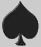

the world itself could not contain
the books that should be written.
John, ch. 21, v. 25

Johann’s problem was
money. Not that he did not have other problems, but money difficulties
were to accompany him all his life. Like dreamers everywhere, he wanted
enough money to live on and enough time to practice his craft. But
while he was expert at talking others into making loans to him, he was
not good at managing the finances he received. He was a goldsmith, and
in Strasbourg, as a resident and not a citizen, became an affiliate,
rather than a full member, of the goldsmiths guild. No one knows
whether he was a good craftsman. No one has ever seen any piece of gold
or silver that can be identified as his work. There seems to be more
evidence that he was a good creative thinker, than that he might have
been, as the saying goes, any good with his hands.
Even to become an affiliate of the guild might imply that he practised
his craft, made things to a certain standard, sold a few trinkets now
and then. But that was not where his interest lay. Johann had something
else in mind. It is tempting, yet a temptation which we should all
resist, to imagine a long, slow idea, forming in the mind of a genius,
a small, clear flash of insight here and there, days, even weeks or
months of darkness, of difficulty punctuated with brief and maddening
illuminations, sudden understandings and misunderstandings,
occasionally a whole picture shaping in the mind as it races along the
narrow alleys and dead end lanes of intense creativity, to later emerge
as a full-blown completely realised comprehension of an open plain, an
open sea, an open clearing of whatever sort, swollen with the absolute
certain knowledge of discovery, and all that sort of thing. Alas, there
are very few valid or even interesting
eureka! events in
the real world, the world of words, the words of any open book.
It seems like cheating to say it, to let it out of the bag, as it is
one of the most closely guarded secrets of our civilisation. No one has
ever remarked on it as far as I know. Yet without it, Johann would not
have invented anything. Schoolchildren everywhere are told that his
passion was printing, and we believe this thumping lie as if it is of
the same order of statement as that the sky is blue on a cloudless day.
As a goldsmith he would have worked metals into cups, buckles, plates,
knives, bracelets, necklaces, settings for precious stones. But no
tinkering with these things or the technologies needed for them could
possibly have led any goldsmith to have come upon the technicalities of
printing, even though those technologies were absolutely necessary to
the development of the printing art.
No. There was something else. Something so simple, so radically assumed
that it has disappeared under the welter of words designed to uncover
it. What was it that Johann saw that was not a vision, not an image,
not an idea, before he founded printing? You are, naturally, at liberty
to answer it any way you wish. My answer is: a book, and a woman, for
these, and not the tools of his craft, were what he held, and always
held, in his hands, and in his heart, before he could ever have turned
his labour into a line of type.